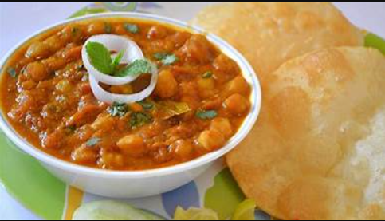

CHOLE BHATURE

DESCRIPTION
These are fluffy deep fried Indian breads served with chole which are chickepeas cooked in a spicy masala. The
refined flour dough for the bhature needs to be left to ferment for a few hours before being rolled into oval
shaped discs and deep-fried. Chole-bhature is one of those few things that are worth the calories!
INGREDIENTS
-
Chickpeas (kabuli chana) soaked overnight and drained 1 cup
- Tea bags 2
- Salt to taste
- Ghee 2 tablespoons
- Cumin seeds 1 teaspoon
- Green chillies slit 2
- Ginger-green chilli paste 1 tablespoon
- Coriander powder 1 tablespoon
- Cumin powder ½ teaspoon
- Red chilli powder 1 teaspoon
- Chole masala 1 teaspoon
- Dried mango powder ½ teaspoon
- Dried pomegranate seeds (anardana) roasted and coarsely crushed 1 tablespoon
- Garam masala powder 1 teaspoon
- Fresh coriander sprigs for garnishing
- Bhature
- Refined flour (maida) 2½ cups
- Baking powder ½ teaspoon
- Baking soda a pinch
- Salt to taste
- Powdered sugar 2 teaspoons
- Yogurt ½ cup
- Oil 1 tablespoon + for greasing and to deep fry
HOW TO MAKE CHOLE BHATURE
-
Take chickpeas in a pressure cooker. Add tea bags, 6-8 cups water and salt, cover and cook for 15-20 minutes
or till fully done and soft. Drain the chickpeas, discard the tea bags and reserve the stock.
-
Sieve together flour, baking powder, baking soda, salt and powdered sugar in a parat. Add yogurt and mix
well.
-
Add some water and knead into a soft dough. Add 1 tablespoon oil and knead well.Set aside for 15-20 minutes.
-
Heat ghee in a non-stick pan. Add cumin seeds and green chillies and sauté for 30 seconds.
-
Add ginger-green chilli paste and sauté for 30 seconds. Add coriander powder, cumin powder and chilli powder
and mix.
-
Add chole masala and dried mango powder and mix. Add reserved stock, mix and bring mixture to boil.
-
Add boiled chickpeas and ¾ cup water, mix and cook on medium heat for 8-10 minutes. Lightly mash.
-
Add dried pomegranate powder and garam masala powder and mix. Add ¼ cup water. Chop tomatoes, add to pan,
mix and cook for 2-3 minutes.
-
Heat sufficient oil in a kadai. Divide the dough into equal portions and shape into balls. Grease worktop
with some oil and roll each ball into thick discs.
- Deep-fry each disc in hot oil till light golden and puffed up. Drain on absorbent paper.
-
Garnish chole with a coriander sprig and serve hot with bhature.
BACK TO MAIN MENU